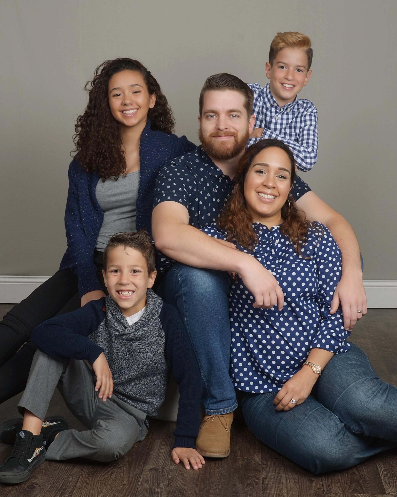

Profile - Nate Jones

About Me
-
I was born in South Dakota, but raised in Colorado.
-
I have an M.S. in Communications from Syracuse University and an M.B.A. from the University of Denver.
-
I am a Communications Director for a City in the South Metro Denver Area.
-
I was in the U.S. Army for 9 years where I served as a Public Affairs Specialist and Broadcast Journalist.
-
My dream is to live abroad with my family as a digital nomad. I have an amazing wife, a smart, beautiful daughter, and two sweet and charming boys.
-
I'm an avid gamer and am looking forward to The Legend of Zelda: Tears of the Kingdom.
Interests
-
I love to write short stories and film scripts.
-
My favorite bands are Wilco, The National, and Wolf Parade.
-
I have been a semi-professional documentary photographer for nearly a decade now.
-
I am currently catching up on 1,000 episodes of One Piece, and am 150 episodes from completing my binge of the show.

Nate's favorite games of all time
-
Final Fantasy X
-
The Legend of Zelda: Wind Waker
-
Resident Evil 4
-
Dark Souls 3
-
Metal Gear Solid 3: Snake Eater

